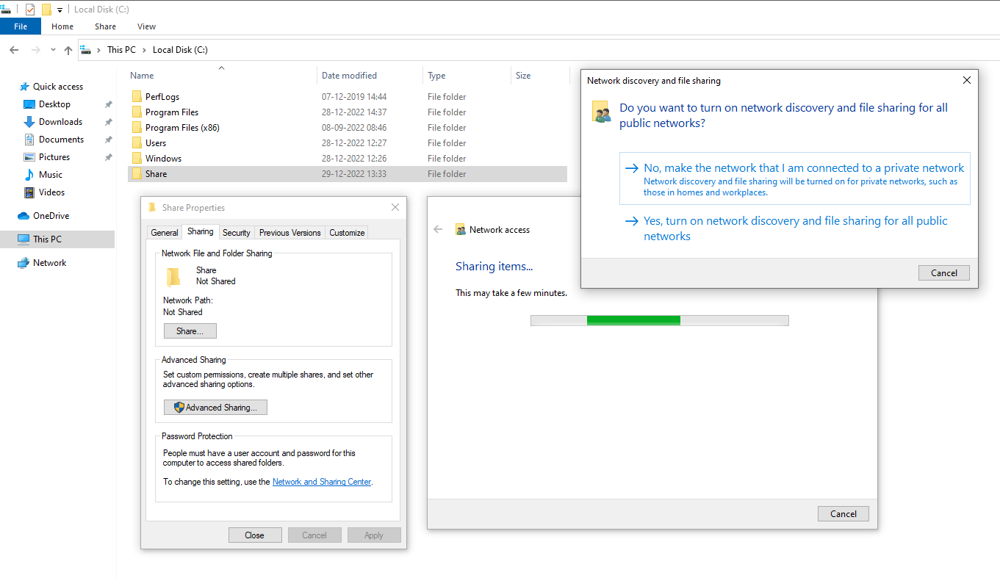

Will make a folder name Share in the C drive and will share it
Frank Castle -> Fcastle is going to login as The punisher)
and the other user is going t o login as peter parker
Tony Start -> Goku Kakrot
Peter Parker -> Pparker is going to login as Peter Parker

After that will pase the Domain Ip address (i.e. 192.168.205.137) in the DNS in the IPV4 through
- Open Network and Internet Setting
- Change Adapter Setting

Search Domain the search bar of Windows

Will select Join this device to a local active Directory domain (i.e. Naruto.local in our case)


After Restart it happen will open the other user as Naruto\administrator

Search Computer Management in the Windows Search
Computer Management -> Local Group and Users -> Groups -> Adminstrator -> Add
Mluffy : Windows Enterprise 1
PVegeta : Windows Enterprise 2

After adding both the user names this should be the output:

Windows Server 2019:

We have disabled the windows defender and for the most of the part we have the default setttings